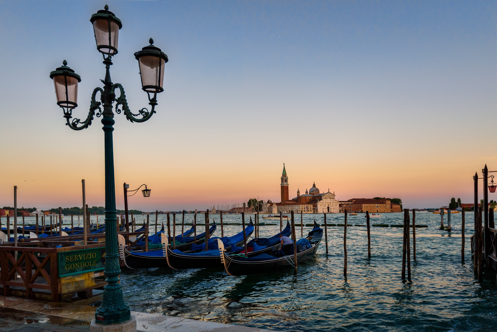
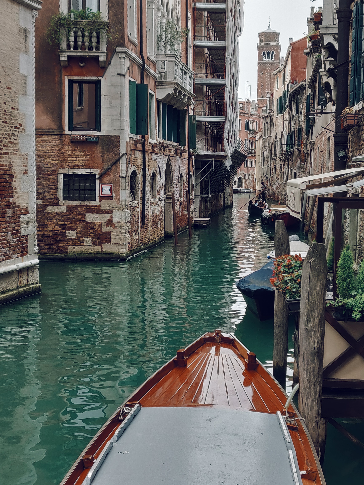

Venise
Présentation
Venise, une ville édifiée sur l'eau, où les canaux serpentent comme des artères vivantes, offrant un spectacle enchanteur à chaque coin de rue.
Ses ruelles étroites et ses ponts pittoresques invitent à la déambulation, révélant l'âme secrète de cette cité aux mille reflets.
L'atmosphère unique de Venise, imprégnée de mystère et de romance, en fait un lieu où chaque voyageur se perd pour mieux se retrouver.
Monuments

Le palais des Doges, témoignage majestueux de la puissance politique et de la richesse artistique de Venise à travers les siècles.
La basilique Saint-Marc, joyau de l'architecture byzantine ornée de mosaïques scintillantes, évoquant la grandeur spirituelle de la ville.
Le pont du Rialto, emblème emblématique de Venise, symbole de son commerce florissant et de son ingéniosité architecturale.
Histoire
Venise, autrefois un modeste ensemble de communautés insulaires, s'est élevée pour devenir l'une des plus grandes puissances maritimes et commerciales de l'histoire, dominante pendant des siècles dans la Méditerranée.
Sa position stratégique sur les routes commerciales a façonné son destin, favorisant son expansion et sa prospérité économique, mais aussi sa rencontre avec diverses cultures et civilisations.
L'histoire de Venise est marquée par son ingéniosité politique, ses réalisations artistiques remarquables et ses échanges culturels incessants, lui conférant une aura de mystère et de fascination à travers les âges.
GASC Youenn
TALEC Bastien
Jean-Marin RIBARIC